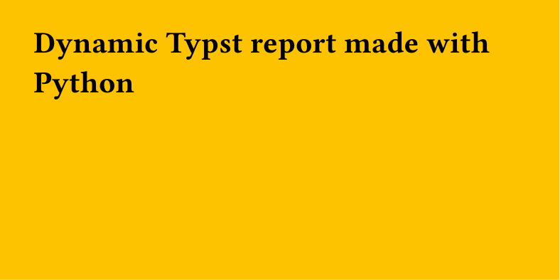

Python & FastAPI: running Typst on the server
Typst can easily be used from any environment, such as a Python web server. Here we'll see an example that creates a FastAPI /report endpoint with a color argument that returns a PDF report made with Typst, relying on that parameter for styling.
Dependencies¶
Let's start by setting up our environment with uv:
This initializes a new Python project and installs FastAPI along with Typst bindings.
Typst template¶
First, we create a basic Typst file that will serve as a template:
#let col = json(bytes(sys.inputs.color))
#set page(fill: rgb(col), width: 10cm, height: 5cm)
= Dynamic Typst report made with Python
The color value is injected via sys.inputs, decoded from JSON, and used to set the page background color dynamically.
FastAPI endpoint¶
Then we create a minimalist FastAPI app with a single /report endpoint:
from pathlib import Path
import json
from fastapi import FastAPI
from fastapi.responses import FileResponse
import typst
app = FastAPI()
@app.get("/report")
def report(color: str):
path_typst = "template.typ"
path_pdf = "report.pdf"
sys_inputs = {"color": json.dumps(color)}
typst.compile(
path_typst,
output=path_pdf,
sys_inputs=sys_inputs,
)
return FileResponse(Path(path_pdf))
The endpoint takes a color query parameter, passes it to Typst via sys_inputs, compiles the template into a PDF, and returns the file as a response.
Run the server¶
Then we can try it with:
Starts the FastAPI development server with auto-reload enabled.
And in another process:
This calls the endpoint and saves the generated PDF locally.
This will save a report.pdf file that looks like this (yellow background because of the #FFC300 color):

Tip
If you want to learn more about Python and Typst, check out the dedicated tutorial.